She can think like a PM and build enough to prove it.
Divya turns product ambiguity into research, PRDs, wireframes, working AI prototypes, and metrics that say whether it worked. The proof is not hidden in a PDF.
AI product manager portfolio
NextLeap Top PM Fellow User Growth Intern at Paytm MBA @ MAHE, Udupi
Divya ships RAG assistants, MCP agents, PRDs, and evidence-backed product decisions, with 2.7+ years of delivery experience behind them.

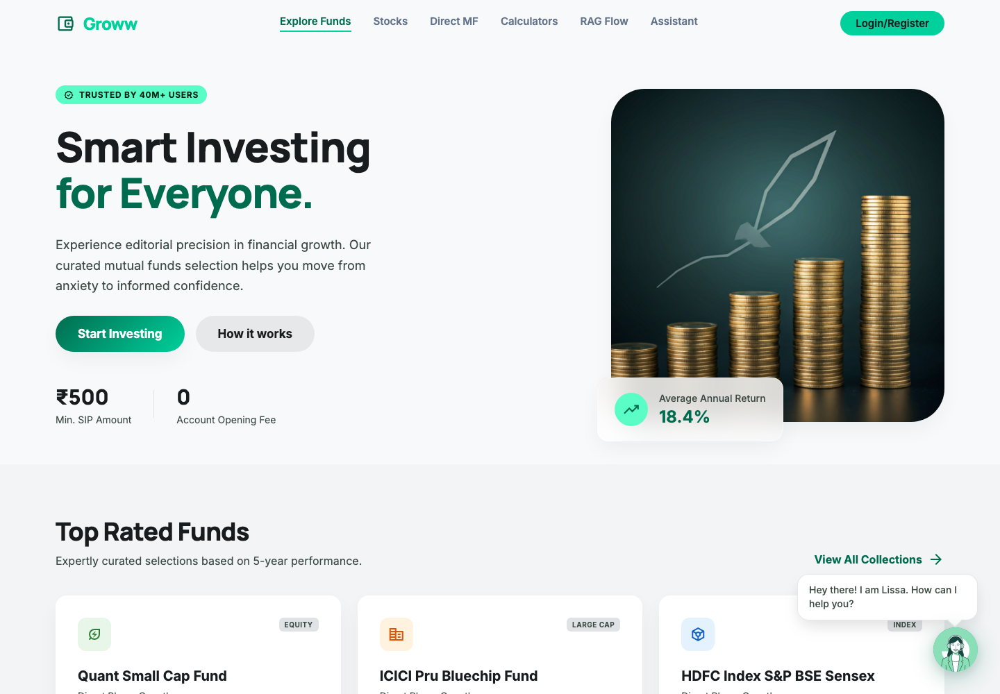
Live RAG chatbot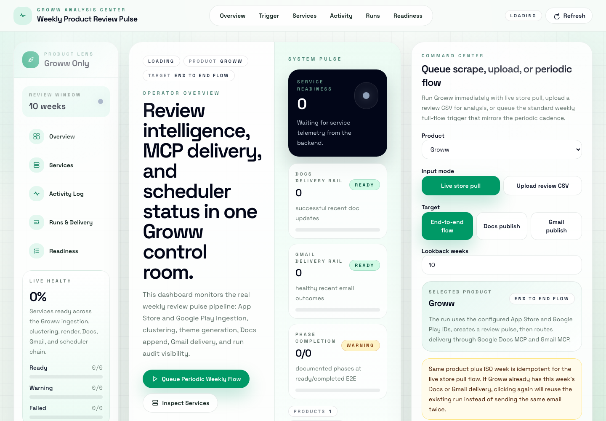
MCP review agentDivya turns product ambiguity into research, PRDs, wireframes, working AI prototypes, and metrics that say whether it worked. The proof is not hidden in a PDF.
Surveys, user interviews, review mining, and RAG-assisted analysis feed prioritisation instead of opinion.
Deploys prototypes, debugs live runtime errors, and runs Jira, UAT, risks, and stakeholder follow-through.
Capstone case study, PRDs, teardowns, AI builds, research, metrics, and ongoing MBA learning, packaged for a reviewer who wants evidence fast.
End-to-end case study: market landscape, 1,850 review signals, personas, ICE prioritisation, user flow, wireframes, KPI tree, GTM, and risks.
Open capstoneProblem framing, user flows, adoption metrics, acceptance criteria, MVP scope, and release thinking.
Open PRDOnboarding friction, activation gaps, workflow clarity, and product improvement recommendations.
Open teardownLive demos show prompt engineering, retrieval design, MCP orchestration, and fast AI prototyping.
View GitHubProblem, positioning, revenue model, competition layer, school onboarding, and growth strategy.
Open deckProduct metrics, user behavior, adoption loops, and data-informed decision making.
Open metricsMixed-method study with 40+ survey responses and 6 interviews; 71% of users struggled to judge AI output quality outside their domain.
Impact-Confidence-Effort prioritisedOngoing MBA at MAHE, Udupi — business foundation across operations, finance, strategy, stakeholder communication, and management.
Mar 2026 - OngoingEach scroll layer shows a different product-manager muscle: document, critique, build, coordinate, and learn.
Spotify Discovery Compass runs from market landscape and 1,850 review signals to personas, ICE prioritisation, wireframes, KPI tree, and monetisation risk.
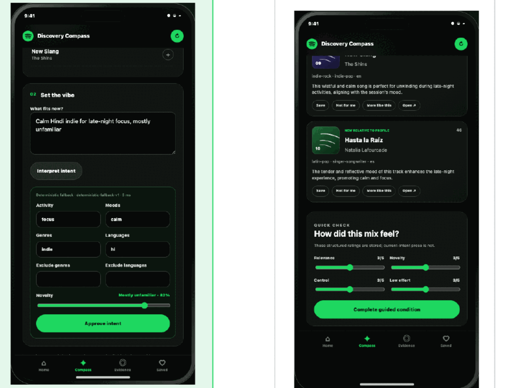
ChatGPT voice input PRD covers the problem, target users, MVP flow, metrics, acceptance criteria, and release path.
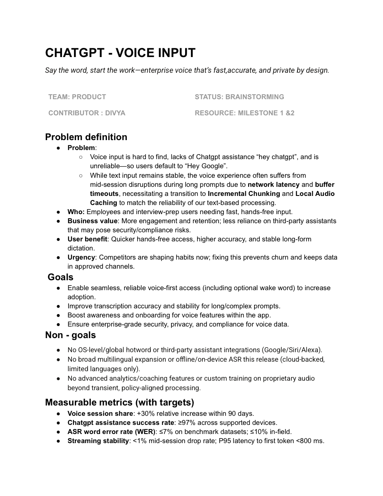
RAG retrieval design, MCP orchestration, prompt engineering, guardrails, and live deployment debugging are visible in shipped demos and GitHub repositories.
Surveys, user interviews, and review mining drive the work, from the Trust Lens study on judging AI output quality to voice adoption research and app review clustering.
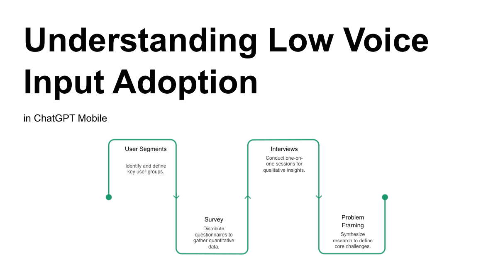
Problem, solution, impact, live demo, GitHub, and LinkedIn proof in one scan.
A discovery product for listeners stuck on repeat: an editable session intent contract before ranking, and a visible steering loop after every recommendation set.
Product case for increasing voice input adoption with discovery, PRD, wireframes, push-to-talk flows, metrics, and a working MVP.
Retrieval-first mutual fund FAQ assistant using chunking, embeddings, vector retrieval, citations, refusal handling, and PII guardrails.
MCP workflow to ingest reviews, cluster themes, generate insights, and publish updates through Google Docs MCP and Gmail MCP.
LinkedIn activity links, shipped demos, and GitHub repositories are attached so reviewers can verify the work.
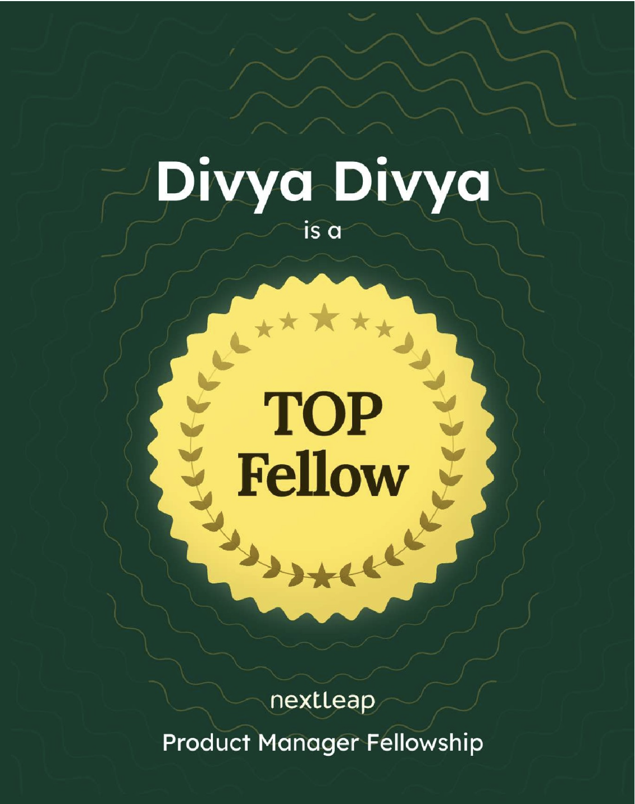
LinkedIn announcement NextLeap Top PM Fellow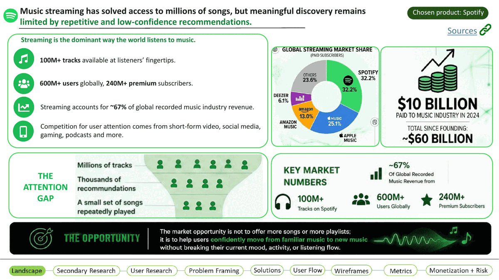
Capstone deck Spotify Discovery Compass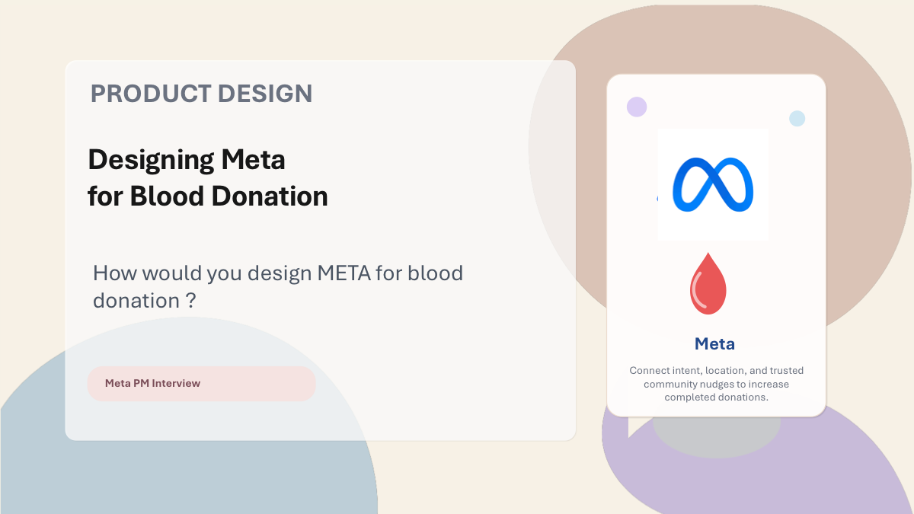
NextLeap portfolio Fellowship case study archive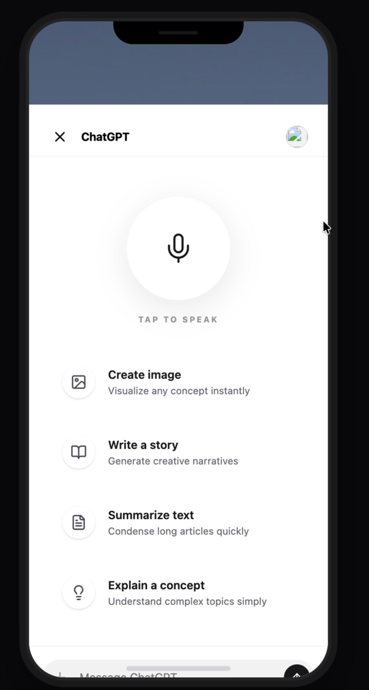
LinkedIn video ChatGPT Voice Input MVP LinkedIn video RAG-based Mutual Fund FAQ Chatbot LinkedIn video Weekly Product Review Pulse AI Agent using MCP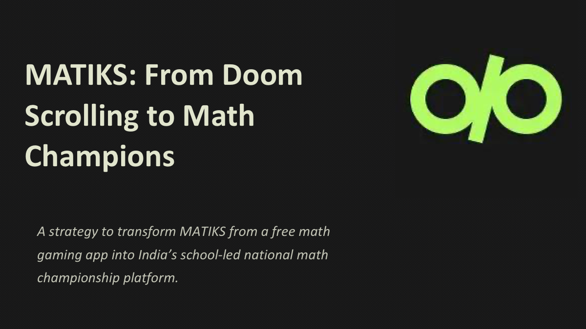
LinkedIn post MATIKS monetization strategy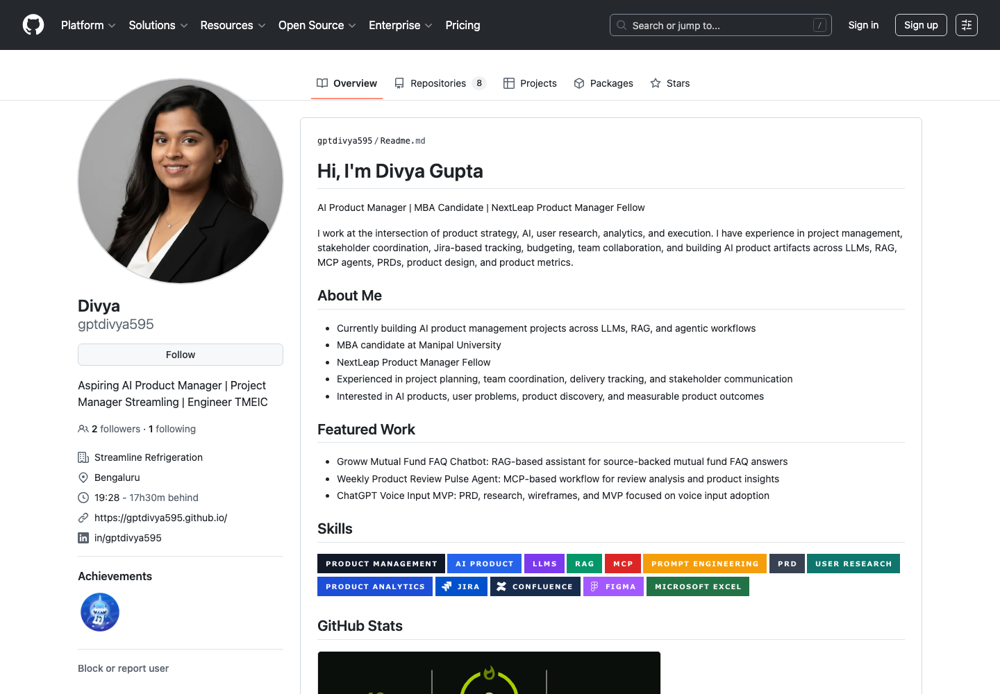
GitHub profile Code, MVPs, dashboards, and analytics projectsReadable PM artifacts: PRDs, teardowns, product design, metrics, and strategy decks.
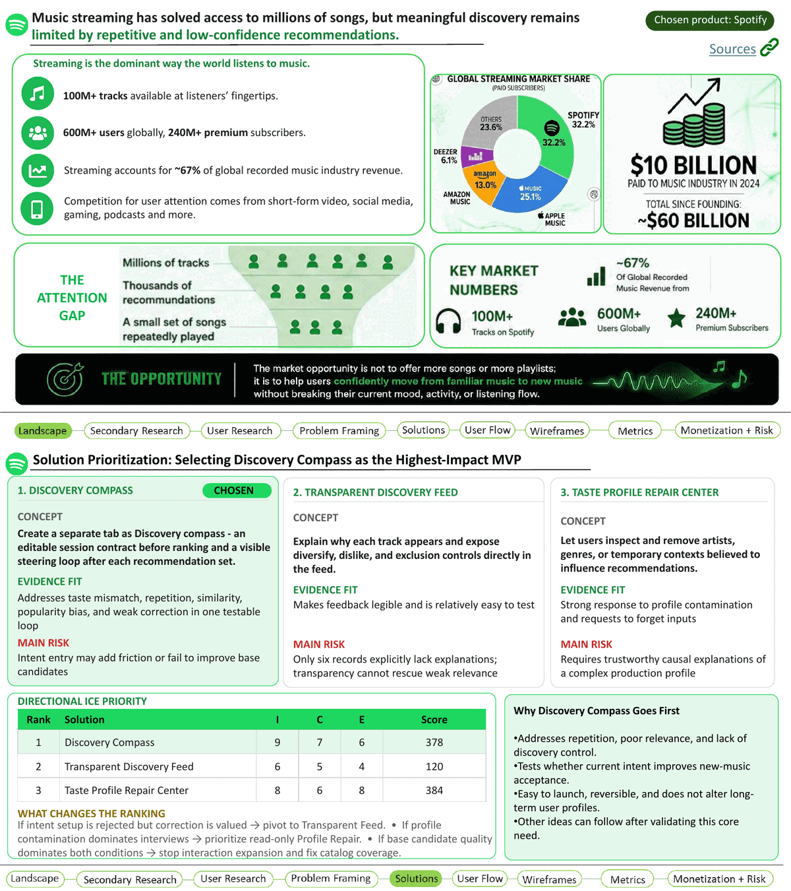
Top PM Fellow capstone Spotify Discovery Compass PRD ChatGPT Voice Input Strategy MATIKS National Math Championship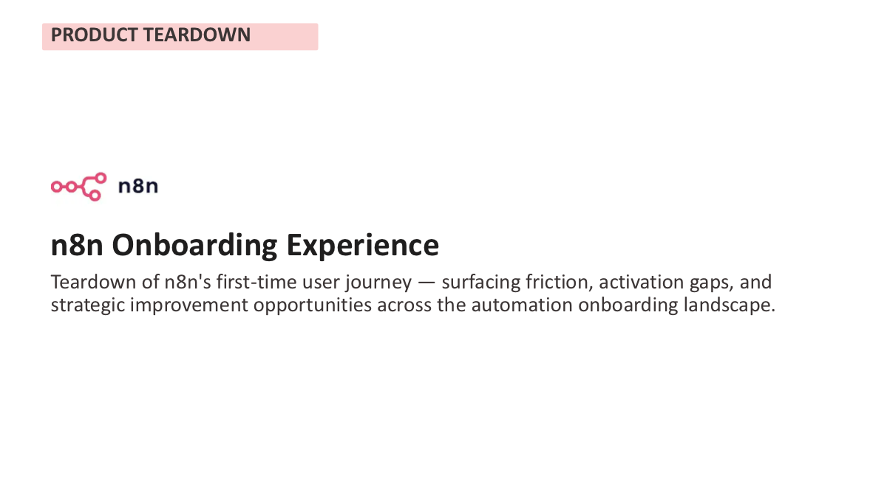
Teardown n8n Onboarding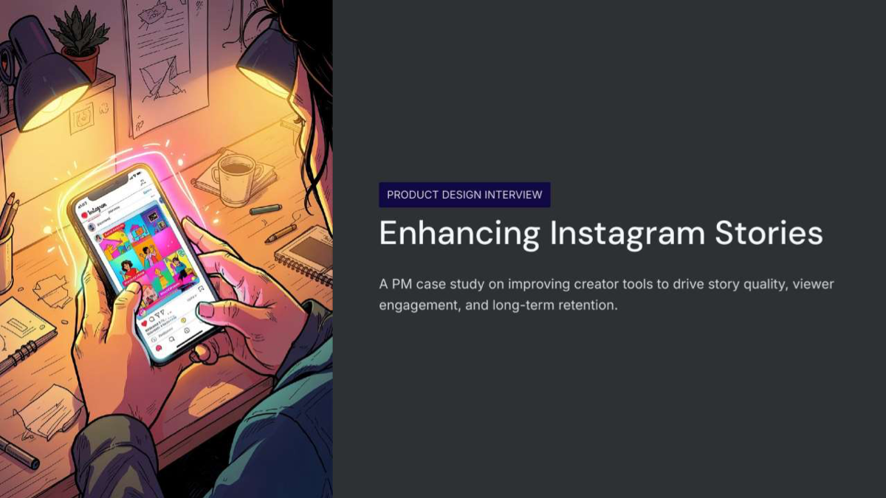
Design Instagram Stories Design Meta Blood Donation Metrics Strategic Product Metrics User research Voice Adoption ResearchAdditional repositories show analytics, dashboards, and applied AI range beyond the flagship work.
Mapped directly to product execution responsibilities: PRDs, sprints, UAT, research, metrics, documentation, and cross-functional delivery.
The Spotify Discovery Compass capstone, MATIKS monetisation strategy, and ChatGPT voice PRD show problem framing, opportunity sizing, ICE prioritisation, KPI trees, roadmap thinking, and execution planning.
Prepared PRDs, workflows, wireframes, feature notes, acceptance criteria, and product case studies.
2.7 years coordinating engineers, vendors, contractors, procurement, IT, clients, and site teams.
Jira tracking, dashboards, automated reporting, UAT support, release coordination, and schedule variance tracking.
Surveys, user interviews, competitive teardowns, review mining at 1,850-record scale, VoC loops, and prioritised product recommendations.
Hands-on with PM documentation, prototyping, analytics, GitHub demos, RAG, MCP, prompt engineering, Vercel and Render deploys, Postman, and Excel.
The delivery record is not a footnote. It proves she can manage ambiguity, people, scope, money, and release pressure, and she is now applying that discipline to AI products at FinTech scale.
Remote. FinTech-scale operating practices, remote execution, data handling, and structured task ownership.
Remote. Recognised as a Top PM Fellow for the Spotify Discovery Compass capstone and consistent execution across the programme.
Bengaluru, IN. BMS and industrial automation delivery across scope, risk, Jira tracking, budgets, vendors, contractors, and site teams.
Bengaluru, IN. Automation, ERP rollout, dashboarding, digitization, and UAT initiatives across production and planning teams.
Udupi, KA. Currently pursuing an MBA at MAHE with focus on business, operations, finance, strategy, and management fundamentals.
CV Raman Global University, Odisha. Engineering foundation for automation, systems thinking, stakeholder coordination, and technical product collaboration.
Agile Methodology, Udemy. Jira with Atlassian Intelligence (AI) and Rovo, Udemy. Lean and Quality Management, Udemy.
Structured for recruiters, ATS parsing, and hiring managers scanning for AI product range.
Large Language Models (LLMs), Generative AI, Machine Learning, NLP, Computer Vision, Prompt Engineering, RAG (Retrieval-Augmented Generation), Fine-tuning, Model Evaluation, A/B Testing, Inference Latency.
AI Roadmapping, Human-in-the-Loop, Responsible AI, AI Ethics and Bias Mitigation, Explainability / XAI, Build vs. Buy vs. Partner, Foundation Models, AI Feature Prioritization.
Agile/Scrum, Lean Product, Jobs-to-Be-Done (JTBD), OKRs, North Star Metric, PRD / BRD, Opportunity Sizing, MoSCoW Prioritization.
API Integration, Model Deployment (MLOps), Data Pipelines, SQL, Python (basic), Vector Databases (Pinecone, Weaviate), Vercel, Render, Postman, Excel, Product Analytics (Mixpanel, Amplitude), A/B Testing Platforms.
NextLeap Product Manager Fellowship - Top PM Fellow (2026). Agile Methodology, Udemy (2025). Jira with Atlassian Intelligence (AI) and Rovo, Udemy (2025). Lean and Quality Management, Udemy (2025).
User Research, Persona Development, Voice of Customer (VoC), Market Sizing (TAM/SAM/SOM), Competitive Benchmarking, Onboarding Optimization, Activation and Retention.
Cross-functional Leadership, Stakeholder Management, Go-to-Market (GTM), Launch Planning, Sprint Planning, SDLC, Agile ceremonies, Data-Driven Decision Making, Product-Led Growth (PLG), Jira, Confluence, Notion, SaaS, B2B platforms.
Agentic AI, AI Orchestration, Multimodal AI, Guardrails, Safety Evaluation, Hallucination Mitigation, Copilot Features, AI Assistants, Autonomous Agents.
Figma, Google Stitch, wireframes, product metrics, Power BI, product teardown, case study, product strategy, product design, PRD, BRD.
Best fit: AI PM, associate PM, product analyst, or PM roles where product thinking, user research, execution, and fast AI prototyping matter. Based in Bengaluru, open to remote.